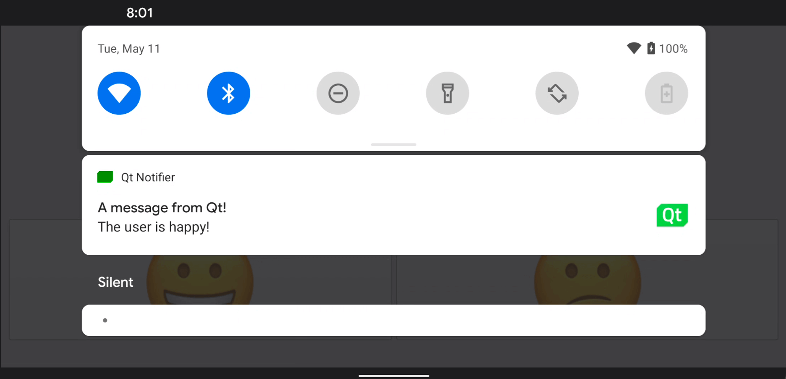

Qt Android Notifier
Demonstrates calling Java code from Qt in an Android application.

This example demonstrates how to add a custom Java class to an Android application, and how to call it using the JNI convenience APIs in Qt.
Click on one of the smiley faces to send a notification in the status bar of the Android screen.
Running the Example
To run the example from Qt Creator, open the Welcome mode and select the example from Examples. For more information, visit Building and Running an Example.
Calling Java Methods from C++ Code
We define a custom Java class called NotificationClient in the NotificationClient.java file:
package org.qtproject.example.androidnotifier;
import android.app.Notification;
import android.app.NotificationManager;
import android.content.Context;
import android.graphics.Bitmap;
import android.graphics.Color;
import android.graphics.BitmapFactory;
import android.app.NotificationChannel;
public class NotificationClient
{
public static void notify(Context context, String message) {
try {
NotificationManager m_notificationManager = (NotificationManager)
context.getSystemService(Context.NOTIFICATION_SERVICE);
Notification.Builder m_builder;
if (android.os.Build.VERSION.SDK_INT >= android.os.Build.VERSION_CODES.O) {
int importance = NotificationManager.IMPORTANCE_DEFAULT;
NotificationChannel notificationChannel;
notificationChannel = new NotificationChannel("Qt", "Qt Notifier", importance);
m_notificationManager.createNotificationChannel(notificationChannel);
m_builder = new Notification.Builder(context, notificationChannel.getId());
} else {
m_builder = new Notification.Builder(context);
}
Bitmap icon = BitmapFactory.decodeResource(context.getResources(), R.drawable.icon);
m_builder.setSmallIcon(R.drawable.icon)
.setLargeIcon(icon)
.setContentTitle("A message from Qt!")
.setContentText(message)
.setDefaults(Notification.DEFAULT_SOUND)
.setColor(Color.GREEN)
.setAutoCancel(true);
m_notificationManager.notify(0, m_builder.build());
} catch (Exception e) {
e.printStackTrace();
}
}
}
In the NotificationClient C++ class header file, notificationclient.h, we declare a simple C++ API to display notifications on an Android device. It consists of a single string property, notification, and a slot, updateAndroidNotification(), that calls the Java code:
class NotificationClient : public QObject { Q_OBJECT public: explicit NotificationClient(QObject *parent = 0); void setNotification(const QString ¬ification); QString notification() const; signals: void notificationChanged(); private slots: void updateAndroidNotification(); private: QString m_notification; };
We connect the notificationChanged() signal to the updateAndroidNotification() slot to update the notification text when the notification text changes:
m_notification = notification;
emit notificationChanged();
The updateAndroidNotification() function calls the Java method responsible for sending the notification from the Android platform APIs. First, we construct a Java string jstring from the notification string, then pass the jstring object as a parameter to the notify() method in Java:
void NotificationClient::updateAndroidNotification() { QJniObject javaNotification = QJniObject::fromString(m_notification); QJniObject::callStaticMethod<void>( "org/qtproject/example/androidnotifier/NotificationClient", "notify", "(Landroid/content/Context;Ljava/lang/String;)V", QNativeInterface::QAndroidApplication::context(), javaNotification.object<jstring>()); }
The call to the Java meethod use QJniObject which relies on the Java Native Interface (JNI) APIs to communicate with Java. Also, in the previous snippet, we are passing the app's context object which the the static Java code can use to tap into the app's specific properties and APIs.
To make sure our smiley buttons do what they are supposed to, we add the the following code to change the notification text if either of them are clicked:
QObject::connect(&happyButton, &QPushButton::clicked, []() {
NotificationClient().setNotification("The user is happy!");
});
QObject::connect(&sadButton, &QPushButton::clicked, []() {
NotificationClient().setNotification("The user is sad!");
});
See also Qt for Android.